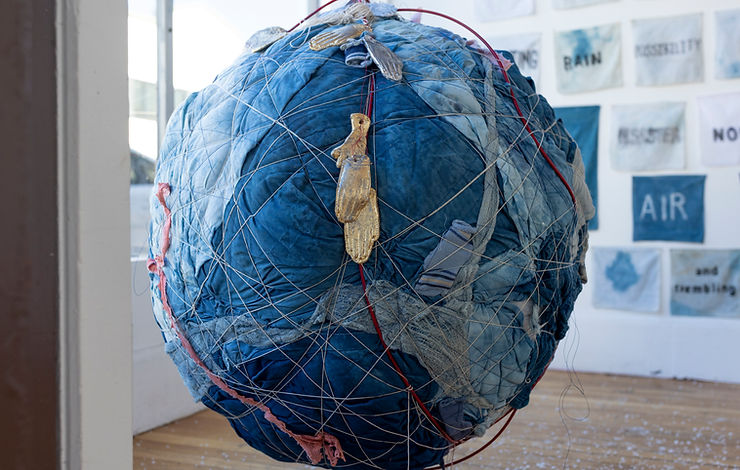

Indigo Cotton Sugar Salt Silver Gold
Pillars of capital, accumulation and desire
Ann Schnake
March - May 2022
Some 500 years ago, Europe began an aggressive expansion of markets and empire. As the wheels of commerce began to spin, merchants, entrepreneurs and bankers accumulated and manipulated capital in unprecedented volume. In this early emergence of capitalism, guns, boats and new tools were used to colonize other lands and pillage materials for distant markets: silver, gold, indigo, cotton, sugar and salt.
These materials became intertwined in western expansion in the colonized Americas: Indigo was a currency of the slave trade, and a first product, along with cotton, to be grown on southern plantations of the United States. This installation is a beginning investigation of these historically and spiritually laden materials: as currency; as pillars of capital; as intertwining beauty, love and hate; as excess and desire. We hold these histories in our bodies but consciousness is slippery.
What you see here: piles of salt; handkerchiefs from China; fabrics dipped in indigo to create precarious planets; twisted, rusted wires; guns and dynamite, made of gauze bandages; more planets on life support; blood drops, tear drops; perilous wild horses; votive "hands of god" outclimbing each other; a snake; a spoon made of 14 pounds of bacon preserved in salt; pig avatars & dunces caps.
In 16th century as Europe claimed these precious materials and fueled expansion and extraction for centuries to come, a suspicion of witchcraft swept the continent. 500 years later, pillars of salt can crumble, witchcraft and historical materialism can resurface, other systems can emerge.
